GPU 编程（续）
GPU 编程模型与 Triton / TileLang / CUTLASS 等抽象层级；用 MFU、MBU 和剖析工具衡量效率；kernel 融合、FlashAttention、持久化 kernel、CUDA Graphs、Megakernel 等近期进展。

现代 AI 系统：智能体与系统优化
Juncheng Yang
LLM 推理服务基础 II：GPU 入门（续：GPU 编程）

事务安排
- 作业 4 今天发布，两周半后截止
- 目标：分析性能与瓶颈并迭代改进，理解真实负载与合成基准有何不同
- 报告很重要，你只需要写少量代码
- 排行榜提交不能用迟交日。不要同时占用超过一块 GPU
- 如果之前系统编程经验不多，会比较难
- 项目提案下周三（10 月 28 日）截止
- 格式和页数不限
- 不要上传 AI 生成的内容
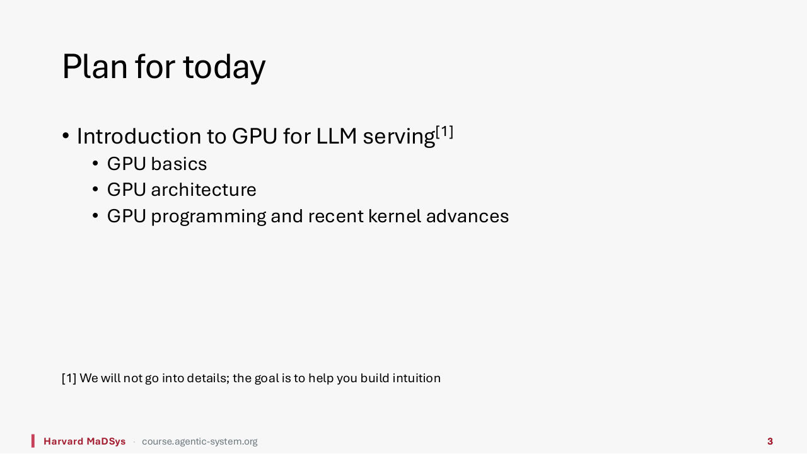
今天的安排
- 面向 LLM 推理服务的 GPU 入门 [1]
- GPU 基础
- GPU 架构
- GPU 编程与近期的 kernel 进展
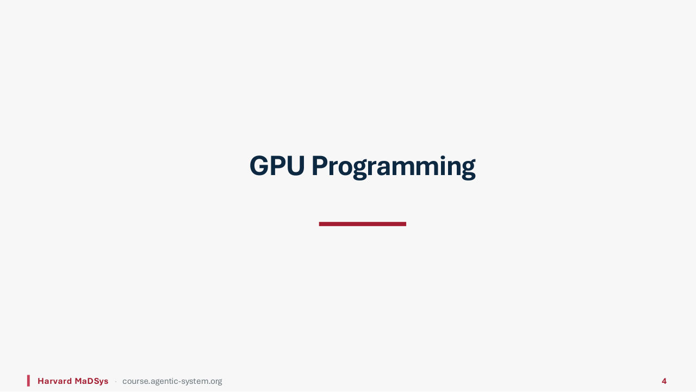
GPU 编程
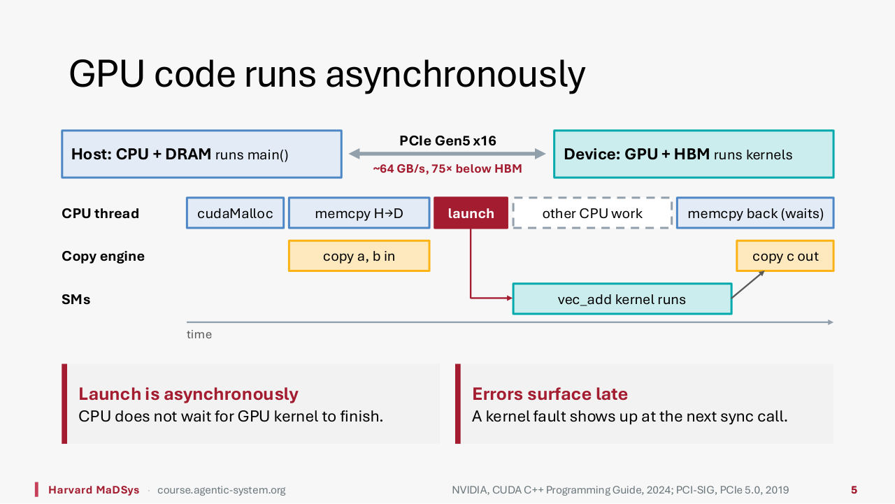
GPU 代码是异步执行的
- 主机（Host）：CPU + DRAM，运行 main()
- 设备（Device）：GPU + HBM，运行 kernel
- 两者之间是 PCIe Gen5 x16：约 64 GB/s，比 HBM 慢 75 倍
（时间线：CPU 线程 cudaMalloc → memcpy H→D → launch → 做其他 CPU 工作 → memcpy 拷回（等待）；拷贝引擎拷入 a、b，拷出 c；SM 上运行 vec_add kernel）
- 启动是异步的：CPU 不会等 GPU kernel 执行完
- 错误暴露得晚：kernel 的故障会在下一次同步调用时才显现
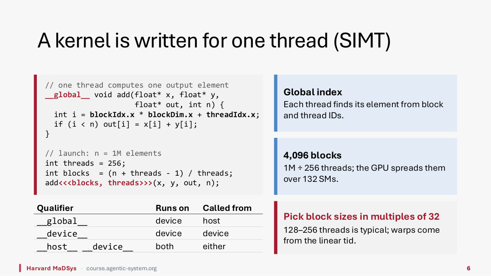
kernel 是为单个线程编写的（SIMT）
// one thread computes one output element
__global__ void add(float* x, float* y,
float* out, int n) {
int i = blockIdx.x * blockDim.x + threadIdx.x;
if (i < n) out[i] = x[i] + y[i];
}
// launch: n = 1M elements
int threads = 256;
int blocks = (n + threads - 1) / threads;
add<<<blocks, threads>>>(x, y, out, n);- 全局索引：每个线程根据块 ID 和线程 ID 找到自己的元素
- 4,096 个块：1M ÷ 256 个线程；GPU 把它们分散到 132 个 SM 上
- 块大小取 32 的倍数：通常 128–256 个线程；warp 由线性 tid 划分
| 限定符 | 运行于 | 调用自 |
|---|---|---|
__global__ | 设备 | 主机 |
__device__ | 设备 | 设备 |
__host__ __device__ | 两者皆可 | 两者皆可 |
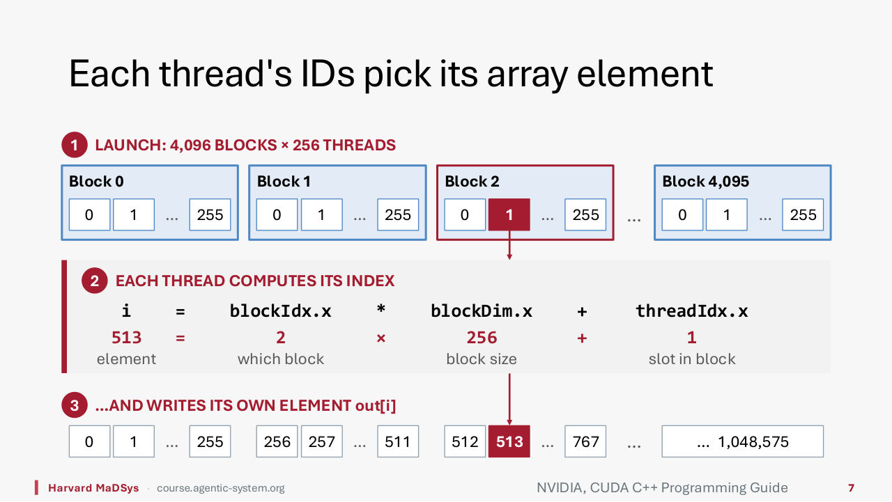
每个线程的 ID 决定它负责哪个数组元素
- 启动：4,096 个块 × 256 个线程（Block 0、Block 1、Block 2……Block 4,095）
- 每个线程计算自己的索引：i（元素）= blockIdx.x（哪个块）× blockDim.x（块大小）+ threadIdx.x（块内位置）
- 然后写自己的元素 out[i]：0 … 1,048,575
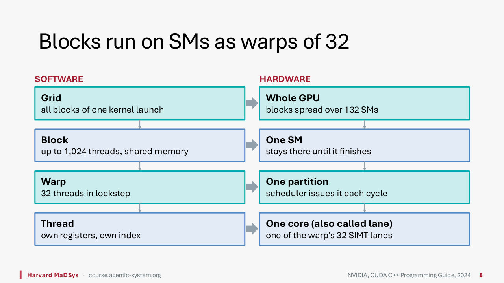
线程块以 32 线程为一个 warp 在 SM 上运行
| 软件 | 硬件 |
|---|---|
| Grid：一次 kernel 启动的所有块 | 整块 GPU：块分散到 132 个 SM 上 |
| Block：最多 1,024 个线程，共享内存 | 一个 SM：块一直留在那里直到完成 |
| Warp：32 个线程锁步执行 | 一个分区：调度器每周期发射它 |
| Thread：自己的寄存器，自己的索引 | 一个核心（也叫 lane）：warp 的 32 条 SIMT 通道之一 |
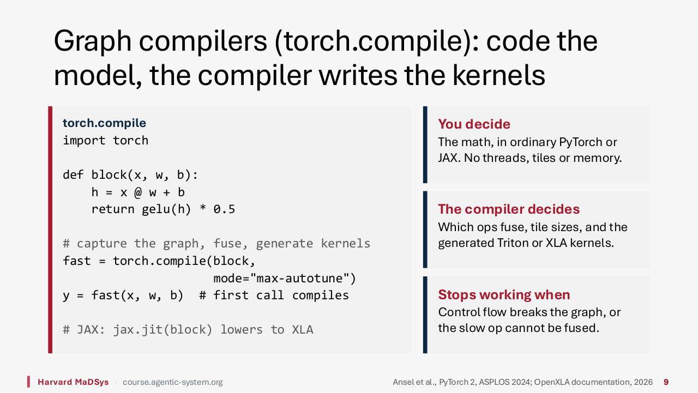
图编译器（torch.compile）：你写模型，编译器写 kernel
import torch
def block(x, w, b):
h = x @ w + b
return gelu(h) * 0.5
# capture the graph, fuse, generate kernels
fast = torch.compile(block,
mode="max-autotune")
y = fast(x, w, b) # first call compiles
# JAX: jax.jit(block) lowers to XLA- 你决定：数学运算本身，用普通的 PyTorch 或 JAX 写。不涉及线程、tile 或内存
- 编译器决定：哪些算子融合、tile 大小，以及生成的 Triton 或 XLA kernel
- 失效的情况：控制流打断了计算图，或者慢的那个算子无法被融合
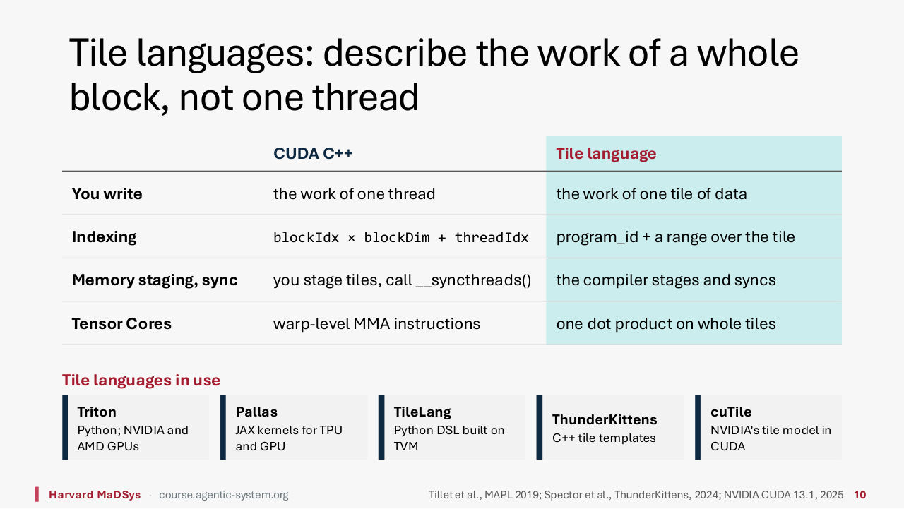
Tile 语言：描述整个块的工作，而不是单个线程
| CUDA C++ | Tile 语言 | |
|---|---|---|
| 你编写 | 一个线程的工作 | 一个数据 tile 的工作 |
| 索引 | blockIdx × blockDim + threadIdx | program_id + 对 tile 的一个范围 |
| 内存暂存、同步 | 你自己暂存 tile，调用 __syncthreads() | 由编译器暂存和同步 |
| Tensor Core | warp 级 MMA 指令 | 对整个 tile 做一次点积 |
常用的 tile 语言
- Triton：Python；支持 NVIDIA 和 AMD GPU
- Pallas：面向 TPU 和 GPU 的 JAX kernel
- TileLang：基于 TVM 的 Python DSL
- ThunderKittens：C++ tile 模板
- cuTile：NVIDIA 在 CUDA 中的 tile 模型
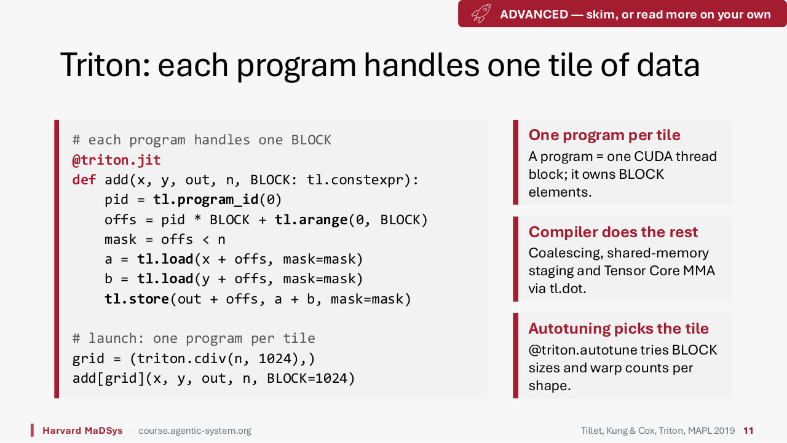
Triton：每个 program 处理一个数据 tile
# each program handles one BLOCK
@triton.jit
def add(x, y, out, n, BLOCK: tl.constexpr):
pid = tl.program_id(0)
offs = pid * BLOCK + tl.arange(0, BLOCK)
mask = offs < n
a = tl.load(x + offs, mask=mask)
b = tl.load(y + offs, mask=mask)
tl.store(out + offs, a + b, mask=mask)
# launch: one program per tile
grid = (triton.cdiv(n, 1024),)
add[grid](x, y, out, n, BLOCK=1024)- 每个 tile 一个 program：一个 program = 一个 CUDA 线程块；它负责 BLOCK 个元素
- 其余交给编译器：合并访存、共享内存暂存，以及通过
tl.dot调用 Tensor Core MMA - 自动调优选择 tile：
@triton.autotune针对每种形状尝试不同的 BLOCK 大小和 warp 数
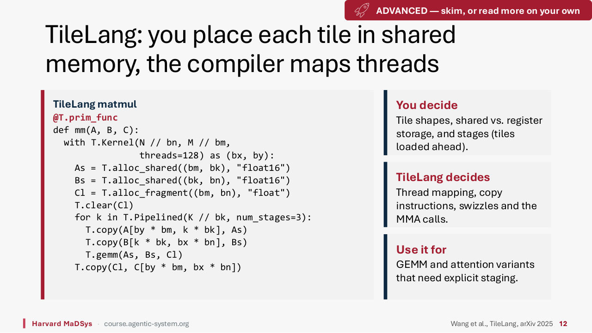
TileLang：你把每个 tile 放进共享内存，编译器负责映射线程
@T.prim_func
def mm(A, B, C):
with T.Kernel(N // bn, M // bm,
threads=128) as (bx, by):
As = T.alloc_shared((bm, bk), "float16")
Bs = T.alloc_shared((bk, bn), "float16")
Cl = T.alloc_fragment((bm, bn), "float")
T.clear(Cl)
for k in T.Pipelined(K // bk, num_stages=3):
T.copy(A[by * bm, k * bk], As)
T.copy(B[k * bk, bx * bn], Bs)
T.gemm(As, Bs, Cl)
T.copy(Cl, C[by * bm, bx * bn])- 你决定：tile 形状、放在共享内存还是寄存器、流水线级数（提前加载几个 tile）
- TileLang 决定：线程映射、拷贝指令、swizzle 和 MMA 调用
- 适用于：需要显式暂存的 GEMM 和注意力变体
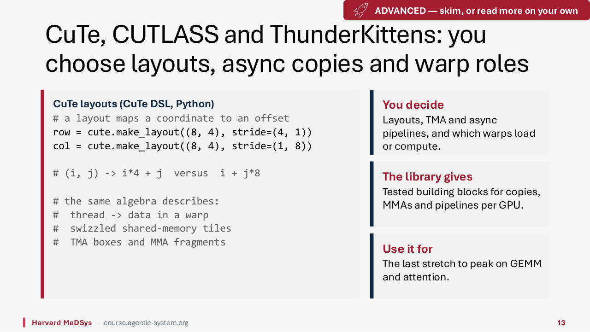
CuTe、CUTLASS 与 ThunderKittens：由你选择布局、异步拷贝和 warp 角色
# a layout maps a coordinate to an offset
row = cute.make_layout((8, 4), stride=(4, 1))
col = cute.make_layout((8, 4), stride=(1, 8))
# (i, j) -> i*4 + j versus i + j*8
# the same algebra describes:
# thread -> data in a warp
# swizzled shared-memory tiles
# TMA boxes and MMA fragments（同一套布局代数可以描述：warp 中线程到数据的映射、swizzle 后的共享内存 tile、TMA box 与 MMA fragment）
- 你决定：布局、TMA 与异步流水线，以及哪些 warp 负责加载、哪些负责计算
- 库提供：针对每代 GPU 经过测试的拷贝、MMA 和流水线构件
- 适用于：让 GEMM 和注意力冲刺到峰值的最后一段
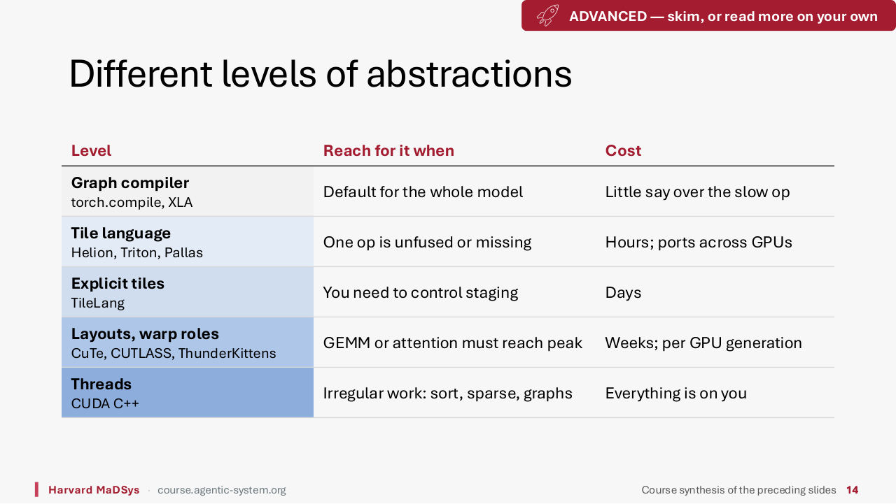
不同的抽象层级
| 层级 | 何时使用 | 代价 |
|---|---|---|
| 图编译器：torch.compile、XLA | 整个模型的默认选择 | 对慢算子几乎没有话语权 |
| Tile 语言：Helion、Triton、Pallas | 某个算子没被融合或缺失 | 几小时；可跨 GPU 移植 |
| 显式 tile：TileLang | 需要控制暂存 | 几天 |
| 布局、warp 角色：CuTe、CUTLASS、ThunderKittens | GEMM 或注意力必须达到峰值 | 几周；每代 GPU 都要重做 |
| 线程：CUDA C++ | 不规则的工作：排序、稀疏、图 | 一切都靠你自己 |
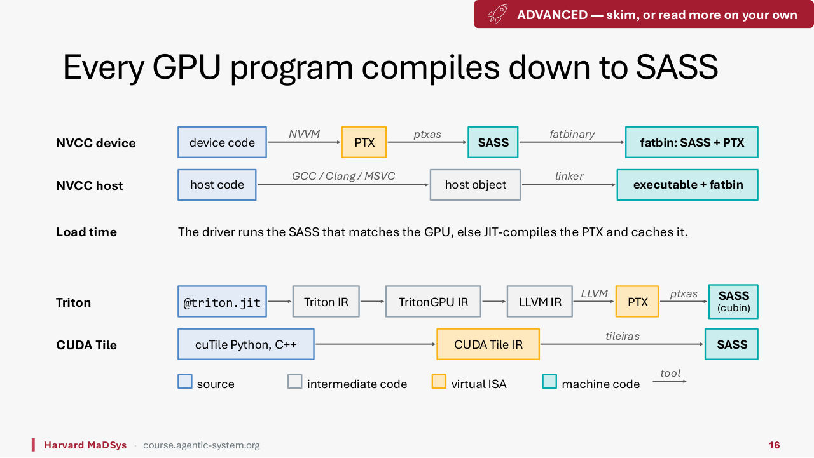
每个 GPU 程序最终都编译成 SASS
- NVCC：设备代码 → NVVM → PTX → ptxas → SASS → fatbinary（SASS + PTX）；主机代码 → GCC / Clang / MSVC → 主机目标文件 → 链接器 → 可执行文件 + fatbin
- Triton：
@triton.jit→ Triton IR → TritonGPU IR → LLVM IR → LLVM → PTX → ptxas → SASS（cubin） - CUDA Tile：cuTile Python、C++ → CUDA Tile IR → tileiras → SASS
- 加载时：驱动运行与当前 GPU 匹配的 SASS；若没有，就 JIT 编译 PTX 并缓存
（图例：源码 / 中间代码 / 虚拟 ISA / 机器码 / 工具）
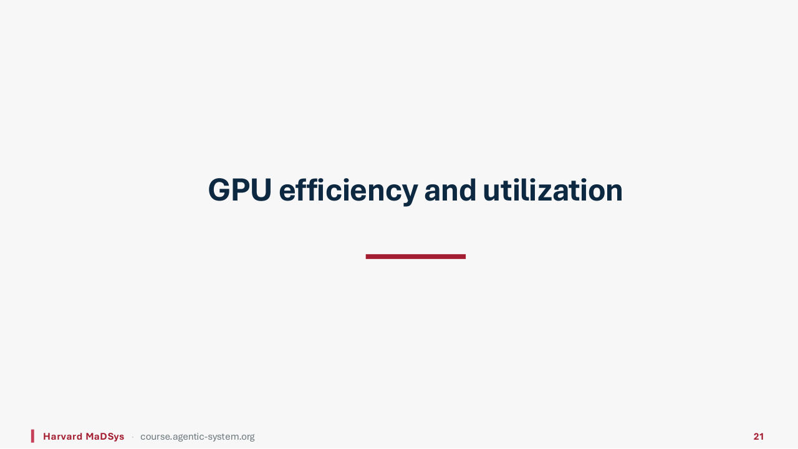
GPU 效率与利用率
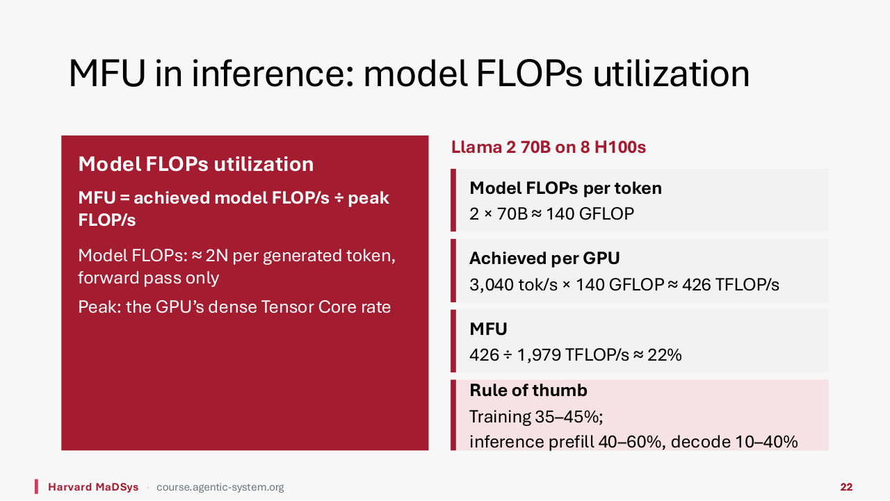
推理中的 MFU：模型 FLOPs 利用率
模型 FLOPs 利用率
- MFU = 实际达到的模型 FLOP/s ÷ 峰值 FLOP/s
- 模型 FLOPs：每个生成 token 约 2N，只算前向
- 峰值：GPU 的稠密 Tensor Core 速率
8 块 H100 上的 Llama 2 70B
- 每 token 模型 FLOPs：2 × 70B ≈ 140 GFLOP
- 每块 GPU 实际达到：3,040 tok/s × 140 GFLOP ≈ 426 TFLOP/s
- MFU：426 ÷ 1,979 TFLOP/s ≈ 22%
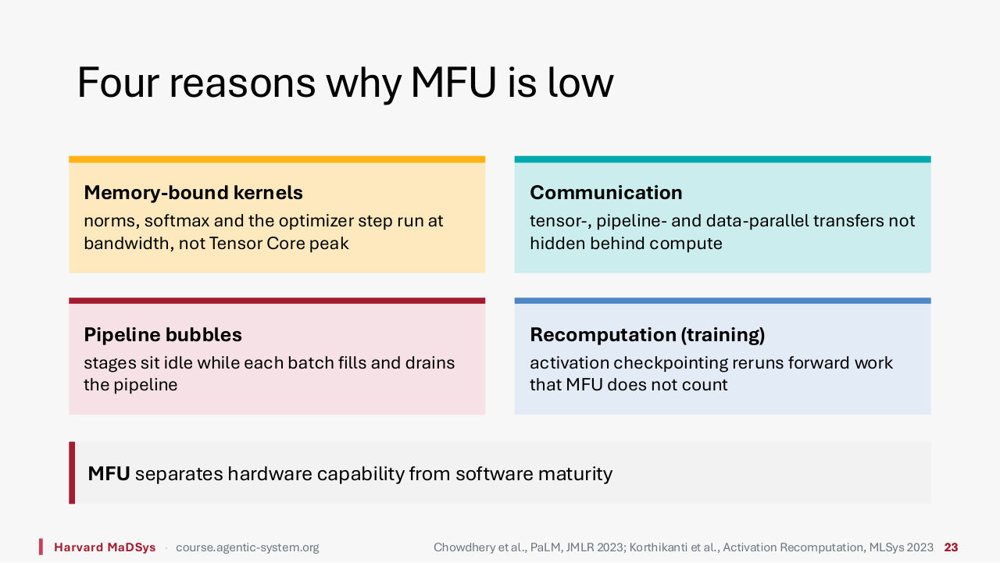
MFU 偏低的四个原因
- 通信：张量、流水线和数据并行的传输没有被计算掩盖
- 流水线气泡：每个批次填充和排空流水线时，各阶段处于空闲
- 内存受限的 kernel：归一化、softmax 和优化器更新以带宽速度运行，而不是 Tensor Core 峰值
- 重计算（训练）：激活检查点会重跑前向计算，而 MFU 不计入这部分
（Chowdhery et al., PaLM, JMLR 2023；Korthikanti et al., Activation Recomputation, MLSys 2023）
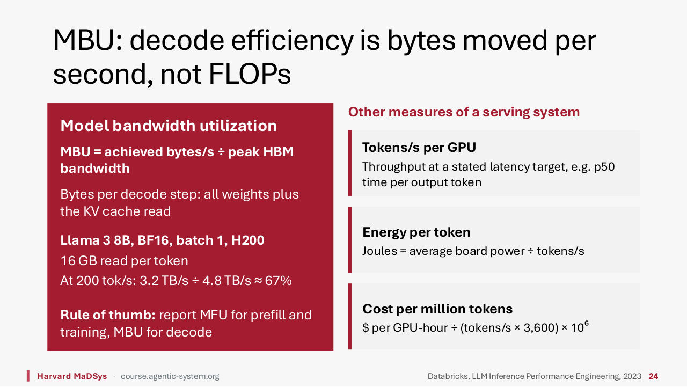
MBU：解码效率看的是每秒搬运的字节数，而不是 FLOPs
模型带宽利用率
- MBU = 实际达到的字节/秒 ÷ HBM 峰值带宽
- 每个解码步的字节数：全部权重 + 读取的 KV cache
H200 上的 Llama 3 8B，BF16，batch 1
- 每个 token 读取 16 GB
- 在 200 tok/s 时：3.2 TB/s ÷ 4.8 TB/s ≈ 67%
推理服务系统的其他度量
- 每 GPU 每秒 token 数：在给定延迟目标下的吞吐，例如 p50 每输出 token 耗时
- 每 token 能耗：焦耳 = 平均板卡功耗 ÷ tokens/s
- 每百万 token 成本：每 GPU 小时美元 ÷ (tokens/s × 3,600) × 10⁶
（Databricks, LLM Inference Performance Engineering, 2023）
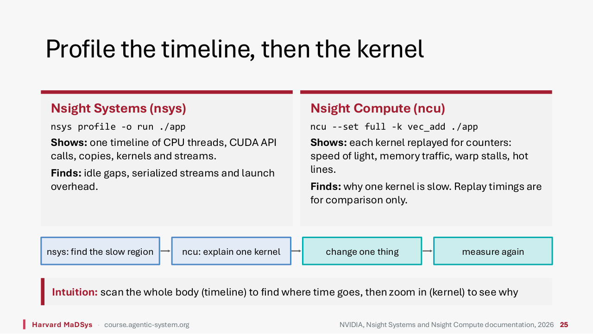
先剖析时间线，再剖析 kernel
Nsight Systems（nsys）：nsys profile -o run ./app
- 展示：CPU 线程、CUDA API 调用、拷贝、kernel 和流的统一时间线
- 发现：空闲间隙、被串行化的流、启动开销
Nsight Compute（ncu）：ncu --set full -k vec_add ./app
- 展示：对每个 kernel 重放以采集计数器——光速分析（speed of light）、内存流量、warp 停顿、热点代码行
- 发现：某个 kernel 为什么慢。重放时间仅供对比
流程：nsys 找到慢的区域 → ncu 解释某个 kernel → 只改一处 → 重新测量
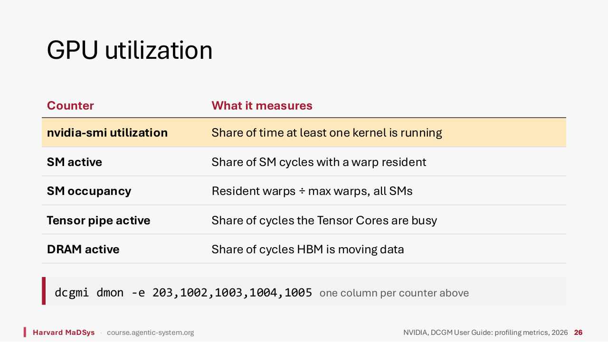
GPU 利用率
| 计数器 | 测量什么 |
|---|---|
| nvidia-smi 利用率 | 至少有一个 kernel 在运行的时间占比 |
| SM active | 有 warp 驻留的 SM 周期占比 |
| SM occupancy | 驻留 warp 数 ÷ 最大 warp 数，所有 SM 合计 |
| Tensor pipe active | Tensor Core 忙碌的周期占比 |
| DRAM active | HBM 正在搬运数据的周期占比 |
dcgmi dmon -e 203,1002,1003,1004,1005：每列对应上面的一个计数器
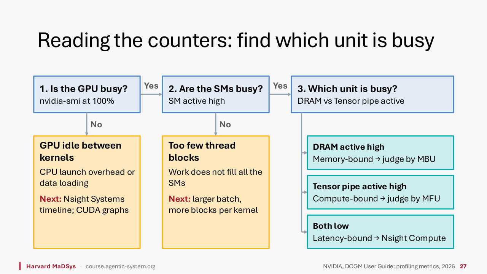
读懂计数器：找出哪个单元在忙
- GPU 忙吗？ nvidia-smi 显示 100%
- 否 → kernel 之间 GPU 空闲：CPU 启动开销或数据加载。下一步：看 Nsight Systems 时间线；使用 CUDA Graphs
- SM 忙吗？ SM active 高
- 否 → 线程块太少：工作量填不满所有 SM。下一步：加大 batch，每个 kernel 更多块
- 哪个单元在忙？ 比较 DRAM active 与 Tensor pipe active
- DRAM active 高 → 内存受限 → 用 MBU 评判
- Tensor pipe active 高 → 计算受限 → 用 MFU 评判
- 两者都低 → 延迟受限 → 用 Nsight Compute 分析
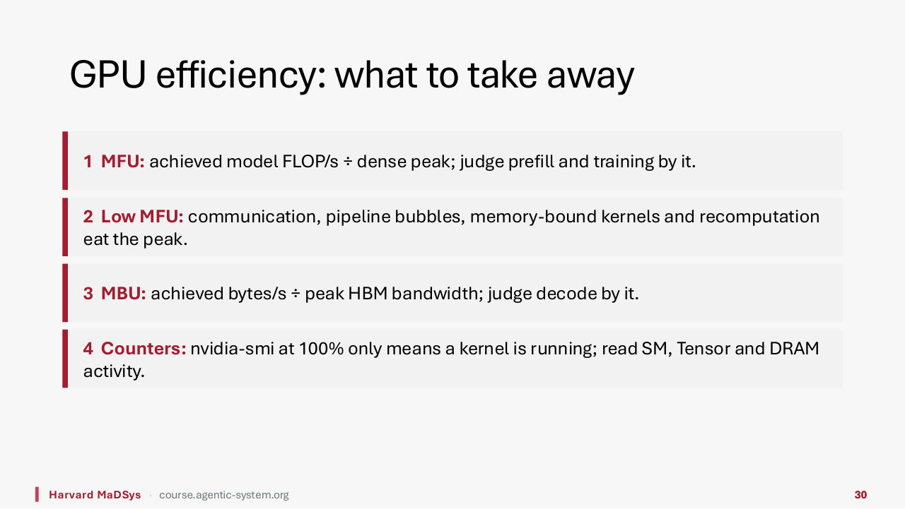
GPU 效率：要点总结
- MFU：实际模型 FLOP/s ÷ 稠密峰值；用它评判预填充和训练
- MFU 偏低：通信、流水线气泡、内存受限的 kernel 和重计算吃掉了峰值
- MBU：实际字节/秒 ÷ HBM 峰值带宽；用它评判解码
- 计数器：nvidia-smi 显示 100% 只说明有 kernel 在跑；要看 SM、Tensor 和 DRAM 的活跃度
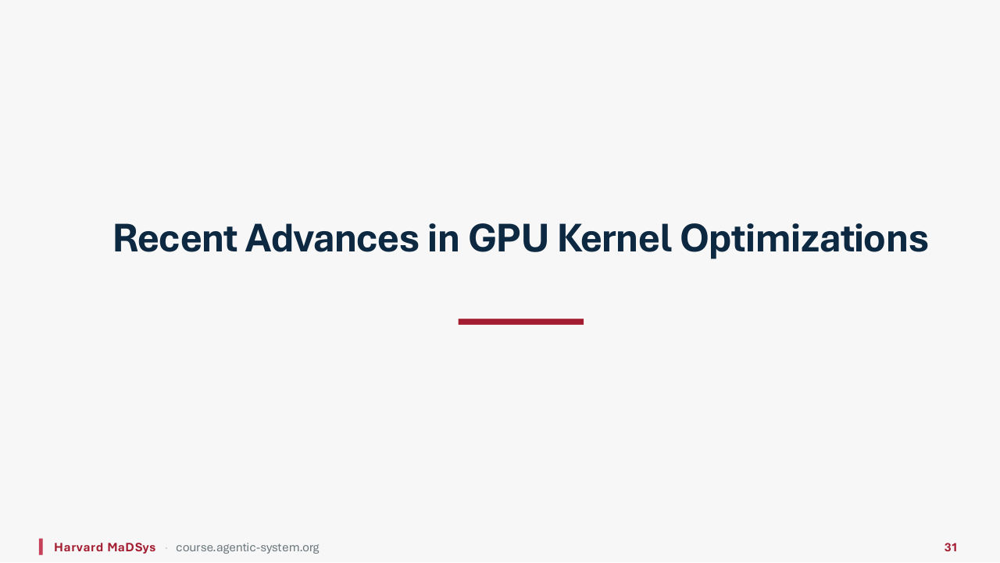
GPU kernel 优化的近期进展
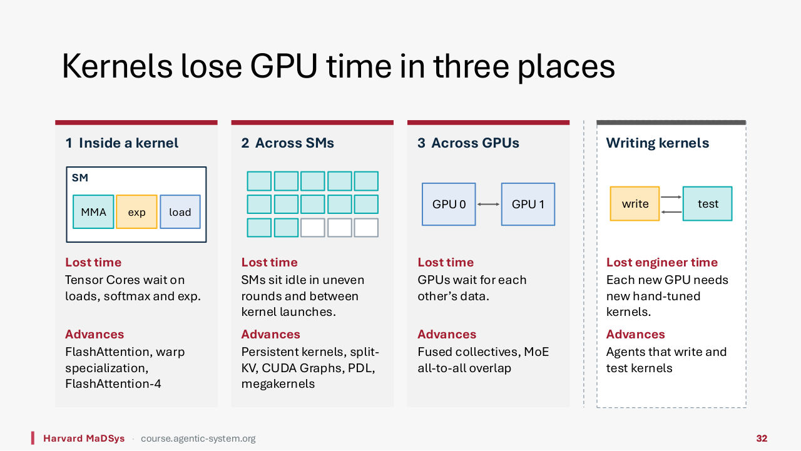
kernel 在三个地方浪费 GPU 时间
- kernel 内部——浪费：Tensor Core 在等加载、softmax 和 exp。进展：FlashAttention、warp 特化、FlashAttention-4
- SM 之间——浪费：SM 在不均匀的轮次中以及 kernel 启动之间闲置。进展：持久化 kernel、split-KV、CUDA Graphs、PDL、megakernel
- GPU 之间——浪费：GPU 互相等待对方的数据。进展：融合的集合通信、MoE all-to-all 重叠
- 编写 kernel——浪费的是工程师的时间：每一代新 GPU 都需要重新手工调优 kernel。进展：能编写和测试 kernel 的智能体
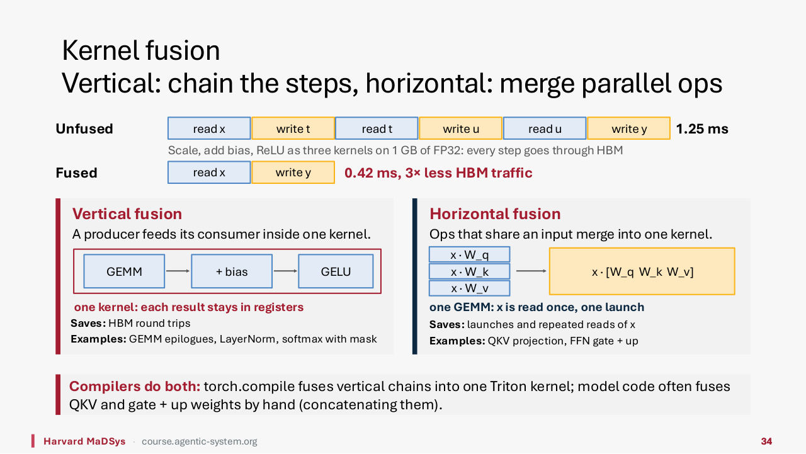
kernel 融合
纵向：把步骤串起来；横向：把并行的算子合并
纵向融合：生产者在同一个 kernel 内直接喂给消费者
- GEMM → + bias → GELU，一个 kernel：每个结果都留在寄存器中
- 节省：HBM 往返
- 例：GEMM 尾处理（epilogue）、LayerNorm、带掩码的 softmax
横向融合：共享同一输入的算子合并成一个 kernel
- x · W_q、x · W_k、x · W_v → x · [W_q W_k W_v]：一个 GEMM，x 只读一次，只启动一次
- 节省：启动次数和对 x 的重复读取
- 例：QKV 投影、FFN 的 gate + up
示例：在 1 GB 的 FP32 数据上做缩放、加偏置、ReLU
- 不融合：三个 kernel，每一步都经过 HBM（读 x、写 t、读 t、写 u、读 u、写 y）——1.25 ms
- 融合：读 x、写 y——0.42 ms，HBM 流量减少 3 倍
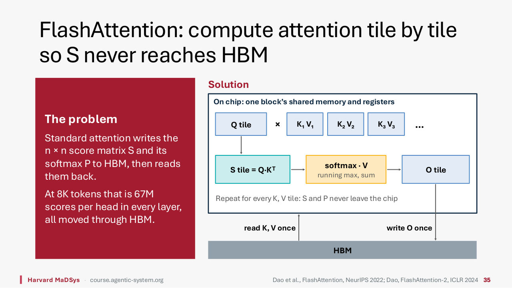
FlashAttention：逐 tile 计算注意力，让 S 永远不落到 HBM
问题
- 标准注意力把 n × n 的分数矩阵 S 及其 softmax P 写入 HBM，再读回来
- 在 8K token 时，每层每个头就是 6,700 万个分数，全部要经过 HBM
解决方案（全部在片上：一个块的共享内存和寄存器中）
- Q tile × K₁V₁、K₂V₂、K₃V₃…… → S tile = Q·Kᵀ → softmax · V（维护运行中的最大值和求和）→ O tile
- 对每个 K、V tile 重复：S 和 P 从不离开芯片
- HBM：K、V 只读一次，O 只写一次
（Dao et al., FlashAttention, NeurIPS 2022；Dao, FlashAttention-2, ICLR 2024）
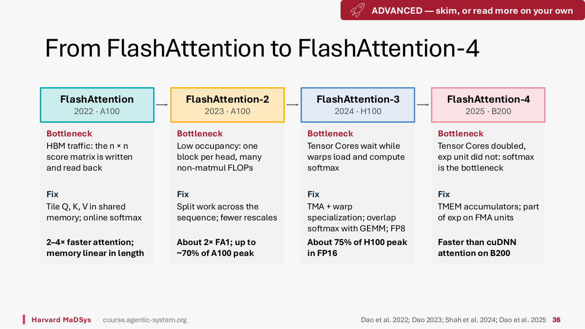
从 FlashAttention 到 FlashAttention-4
| 版本 | 瓶颈 | 修复 | 效果 |
|---|---|---|---|
| FlashAttention · 2022 · A100 | HBM 流量：n × n 分数矩阵被写出又读回 | 在共享内存中对 Q、K、V 分块；在线 softmax | 注意力快 2–4 倍；内存随长度线性增长 |
| FlashAttention-2 · 2023 · A100 | 占用率低：每个头一个块，非矩阵乘 FLOPs 多 | 沿序列拆分工作；减少重缩放 | 约为 FA1 的 2 倍；最高可达 A100 峰值的 ~70% |
| FlashAttention-3 · 2024 · H100 | warp 加载和计算 softmax 时 Tensor Core 在等待 | TMA + warp 特化；softmax 与 GEMM 重叠；FP8 | FP16 下约达 H100 峰值的 75% |
| FlashAttention-4 · 2025 · B200 | Tensor Core 翻倍了，exp 单元没有：softmax 成为瓶颈 | TMEM 累加器；一部分 exp 放到 FMA 单元上计算 | 在 B200 上比 cuDNN 注意力更快 |
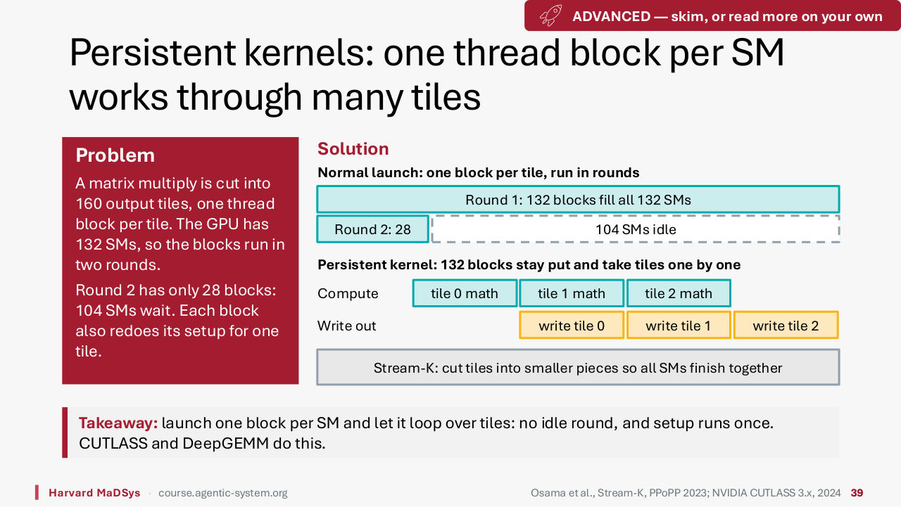
持久化 kernel：每个 SM 一个线程块，循环处理多个 tile
问题
- 一次矩阵乘被切成 160 个输出 tile，每个 tile 一个线程块。GPU 有 132 个 SM，所以这些块要分两轮运行
- 第二轮只有 28 个块：104 个 SM 在等待。每个块还要为单个 tile 重做一遍准备工作
解决方案
- 普通启动：每 tile 一个块，分轮运行——第 1 轮 132 个块占满 132 个 SM；第 2 轮只有 28 个，104 个 SM 空闲
- 持久化 kernel：132 个块常驻，逐个领取 tile（计算 tile 0 → 写出 tile 0 → 计算 tile 1……，计算与写出交错进行）
- Stream-K：把 tile 切成更小的片段，让所有 SM 同时完成
ADVANCED——略读，或自行深入
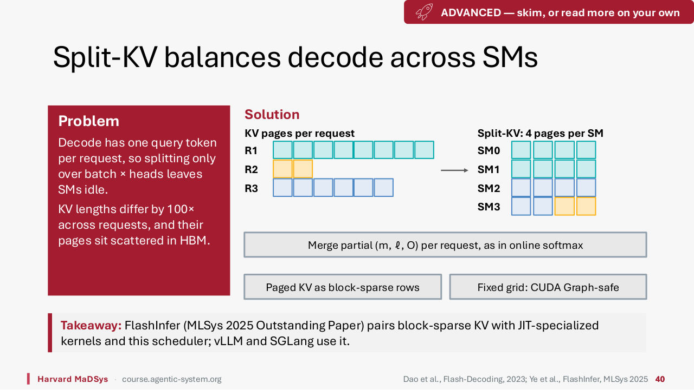
Split-KV：在 SM 之间平衡解码负载
问题
- 解码时每个请求只有一个 query token，所以只按 batch × 头数拆分会让 SM 闲置
- 不同请求的 KV 长度可相差 100 倍，而它们的页面散落在 HBM 各处
解决方案
- 每个请求的 KV 页（R1、R2、R3）→ Split-KV：每个 SM 处理 4 页（SM0–SM3）→ 按请求合并部分结果 (m, ℓ, O)，方式与在线 softmax 相同
- 分页 KV 被视为块稀疏的行
- 固定的 grid：可以安全地放进 CUDA Graph
ADVANCED——略读，或自行深入
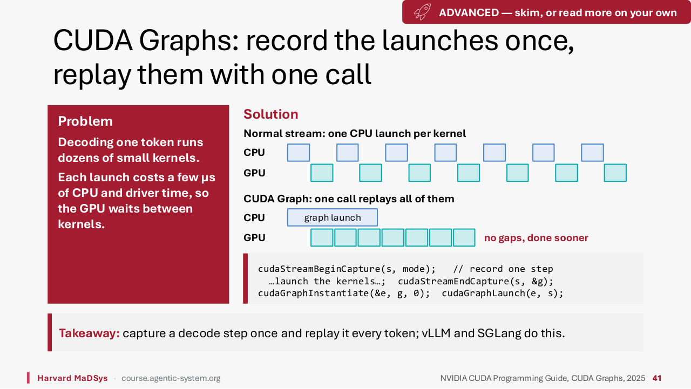
CUDA Graphs：把启动过程录制一次，一次调用全部重放
问题
- 解码一个 token 要运行几十个小 kernel
- 每次启动要花几微秒的 CPU 和驱动时间，所以 GPU 在 kernel 之间等待
解决方案
- 普通流：每个 kernel 一次 CPU 启动，GPU 上有间隙
- CUDA Graph：一次调用重放全部——没有间隙，更早完成
cudaStreamBeginCapture(s, mode); // record one step
…launch the kernels…; cudaStreamEndCapture(s, &g);
cudaGraphInstantiate(&e, g, 0); cudaGraphLaunch(e, s);ADVANCED——略读，或自行深入
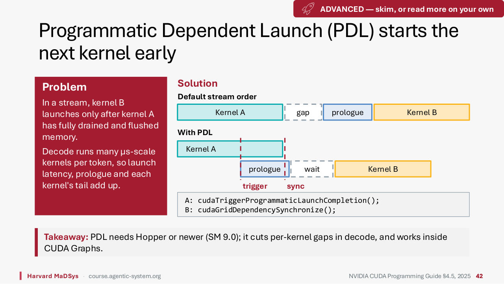
编程式依赖启动（PDL）：提前启动下一个 kernel
问题
- 在一个流中，kernel B 只有在 kernel A 完全排空并刷新内存之后才会启动
- 解码时每个 token 要运行许多微秒级 kernel，所以启动延迟、序幕（prologue）和每个 kernel 的尾部会累加起来
解决方案
- 默认流顺序：kernel A → 间隙 → 序幕 → kernel B
- 使用 PDL：kernel A 运行时 B 的序幕已经开始，在同步点等待 A 触发
A: cudaTriggerProgrammaticLaunchCompletion();
B: cudaGridDependencySynchronize();ADVANCED——略读，或自行深入
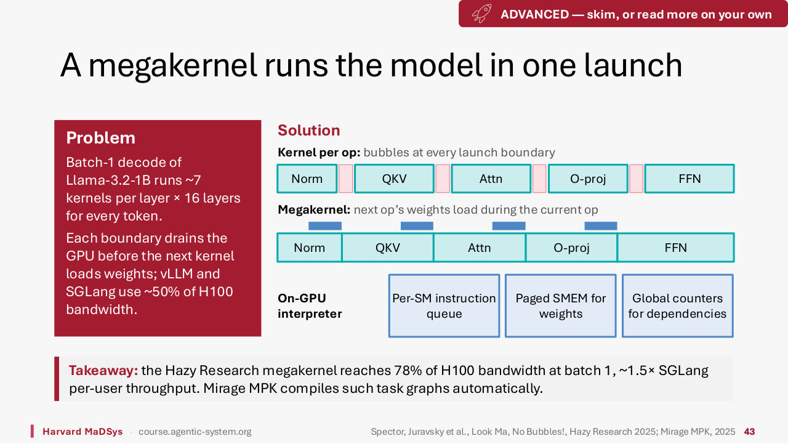
Megakernel：一次启动跑完整个模型
问题
- Llama-3.2-1B 的 batch-1 解码，每个 token 要跑约 7 个 kernel/层 × 16 层
- 每个边界都要先排空 GPU，下一个 kernel 才开始加载权重；vLLM 和 SGLang 只用到 H100 带宽的约 50%
解决方案
- 每个算子一个 kernel：每个启动边界都有气泡（Norm → QKV → Attn → O-proj → FFN）
- Megakernel：在执行当前算子时，就加载下一个算子的权重
- 组成：GPU 上的解释器、每 SM 的指令队列、用于权重的分页共享内存、用于依赖关系的全局计数器
ADVANCED——略读，或自行深入
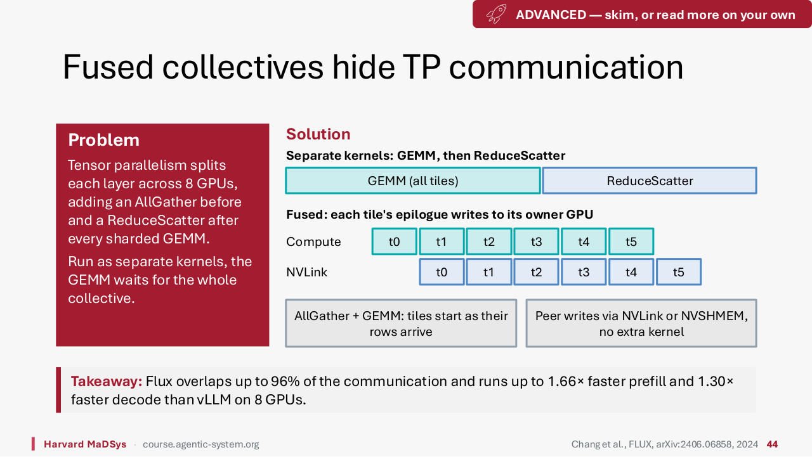
融合的集合通信：掩盖张量并行的通信
问题
- 张量并行把每一层拆到 8 块 GPU 上，在每个切分后的 GEMM 之前加一次 AllGather、之后加一次 ReduceScatter
- 如果作为独立 kernel 运行，GEMM 必须等整个集合通信完成
解决方案
- 独立 kernel：先 GEMM（所有 tile），再 ReduceScatter
- 融合：每个 tile 的尾处理直接写到其归属的 GPU 上（计算 t0–t5 与 NVLink 传输 t0–t5 交错进行）
- AllGather + GEMM：某行数据一到，对应的 tile 就开始计算
- 通过 NVLink 或 NVSHMEM 对等写入，无需额外 kernel
ADVANCED——略读，或自行深入
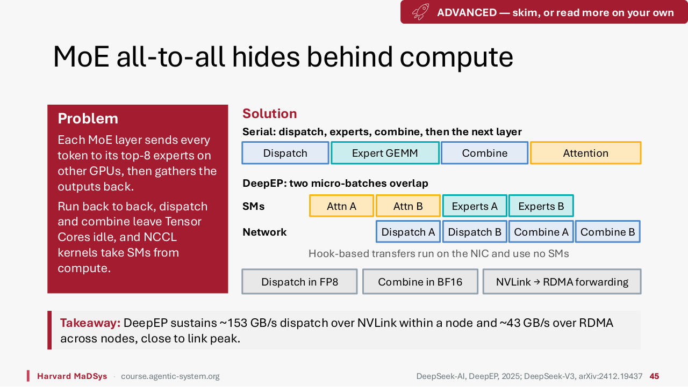
MoE 的 all-to-all 隐藏在计算之后
问题
- 每个 MoE 层都要把每个 token 发给它在其他 GPU 上的 top-8 专家，然后再把输出收集回来
- 背靠背运行时，分发（dispatch）和合并（combine）期间 Tensor Core 闲置，而且 NCCL kernel 还会从计算中抢走 SM
解决方案
- 串行：分发 → 专家 GEMM → 合并 → 下一层的注意力
- DeepEP：两个微批次重叠——SM 上交替运行 Attn A / Attn B / Experts A / Experts B，网络上同时进行 Dispatch A / Dispatch B / Combine A / Combine B
- 基于 hook 的传输在网卡上运行，不占用 SM
- 分发用 FP8，合并用 BF16
- NVLink → RDMA 转发
ADVANCED——略读，或自行深入
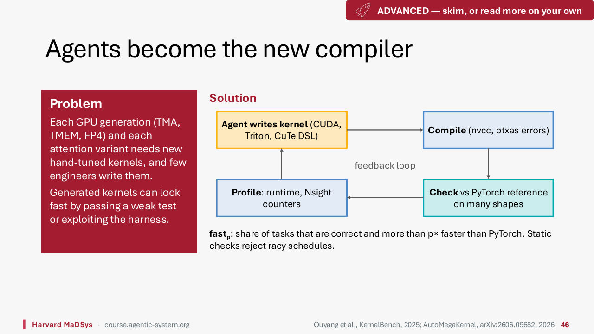
智能体成为新的编译器
问题
- 每一代 GPU（TMA、TMEM、FP4）和每一种注意力变体都需要新的手工调优 kernel，而能写的工程师很少
- 生成的 kernel 可能靠通过一个薄弱的测试或钻 Harness 的空子而“看起来很快”
解决方案（反馈循环）
- 智能体编写 kernel（CUDA、Triton、CuTe DSL）
- 编译（nvcc、ptxas 报错）
- 在多种形状上与 PyTorch 参考实现比对
- 剖析：运行时间、Nsight 计数器
ADVANCED——略读，或自行深入
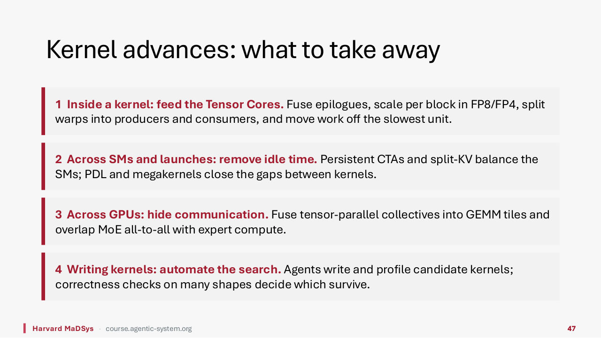
kernel 进展：要点总结
- kernel 内部：喂饱 Tensor Core。 融合尾处理，在 FP8/FP4 下按块缩放，把 warp 分成生产者和消费者，把工作从最慢的单元上挪走
- SM 之间与启动之间：消除空闲时间。 持久化 CTA 和 split-KV 平衡 SM 负载；PDL 和 megakernel 填平 kernel 之间的间隙
- GPU 之间：掩盖通信。 把张量并行的集合通信融合进 GEMM tile，让 MoE 的 all-to-all 与专家计算重叠
- 编写 kernel：自动化搜索。 智能体编写并剖析候选 kernel；在多种形状上的正确性检查决定哪些能留下来
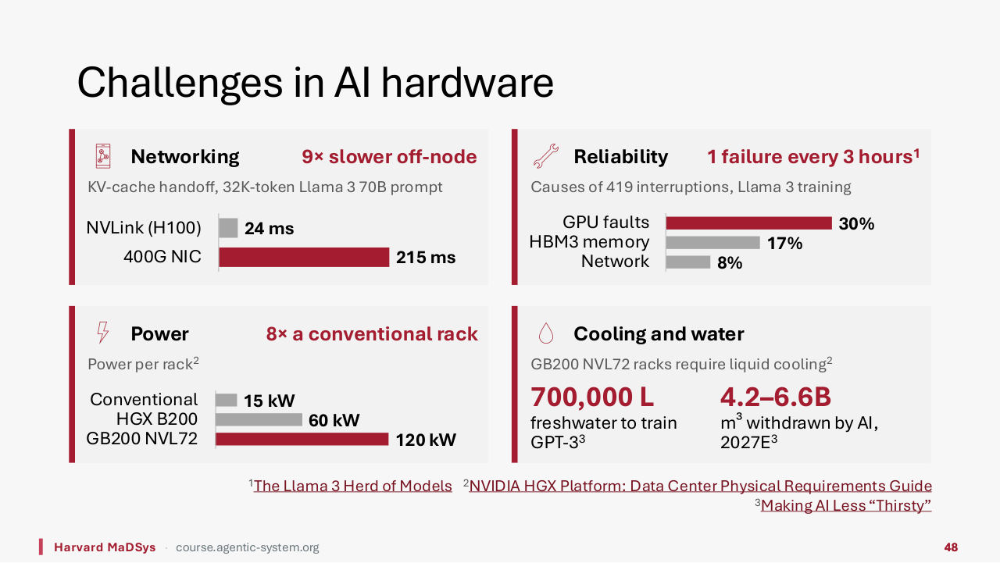
AI 硬件的挑战
- 网络——跨节点慢 9 倍：传递 32K token 的 Llama 3 70B 提示词的 KV cache，400G 网卡需 215 ms，NVLink（H100）只需 24 ms
- 可靠性——每 3 小时一次故障¹：Llama 3 训练中 419 次中断的原因——GPU 故障 30%、HBM3 内存 17%、网络 8%
- 功耗——常规机架的 8 倍²：每机架功耗——GB200 NVL72 120 kW、HGX B200 60 kW、常规机架 15 kW
- 冷却与用水：GB200 NVL72 机架需要液冷²；训练 GPT-3 耗用 70 万升淡水³；预计 2027 年 AI 取水量达 42–66 亿立方米³
（¹The Llama 3 Herd of Models ²NVIDIA HGX Platform: Data Center Physical Requirements Guide ³Making AI Less “Thirsty”）
下节课
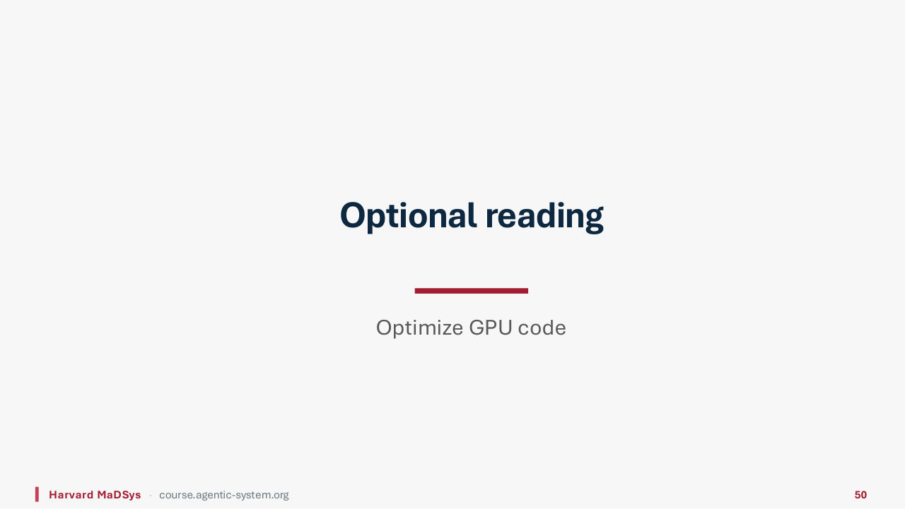
选读材料
优化 GPU 代码
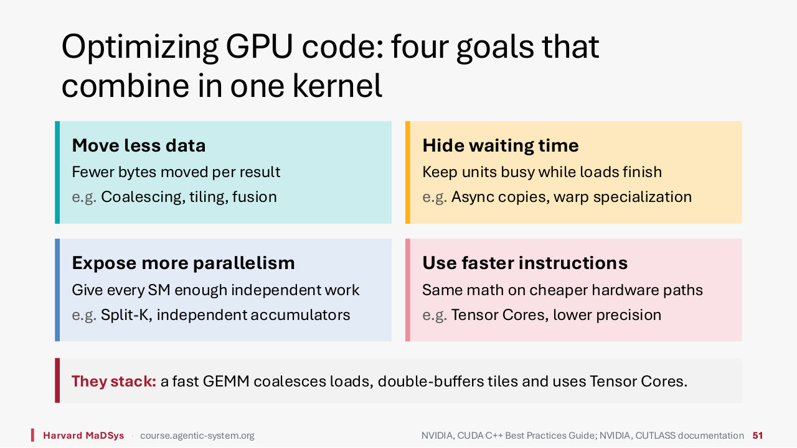
优化 GPU 代码：在一个 kernel 中组合的四个目标
- 搬运更少的数据：每个结果搬运的字节更少——例如合并访存、分块、融合
- 掩盖等待时间：在加载完成期间让各单元保持忙碌——例如异步拷贝、warp 特化
- 暴露更多并行：给每个 SM 足够多的独立工作——例如 split-K、独立的累加器
- 使用更快的指令：同样的数学走更便宜的硬件路径——例如 Tensor Core、更低精度
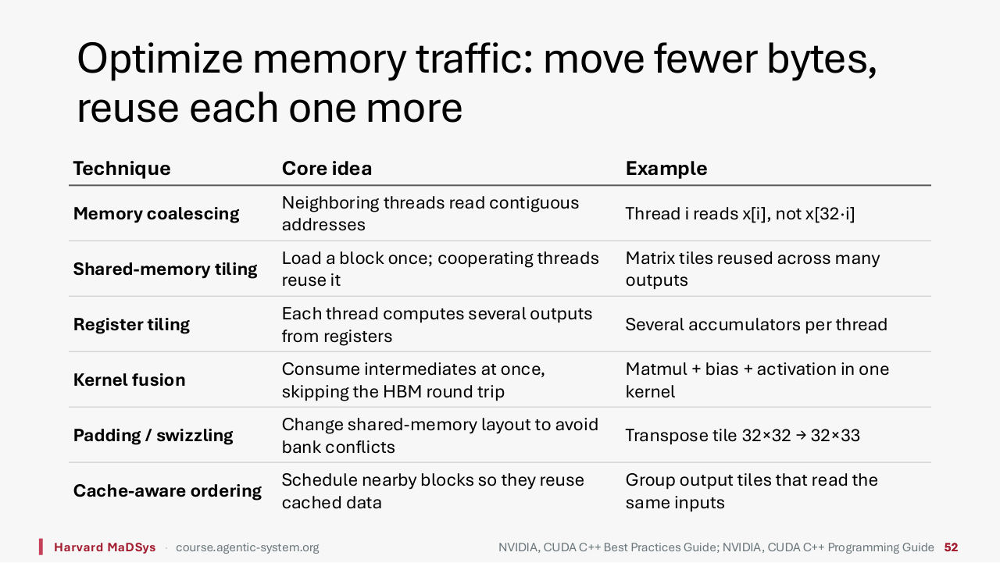
优化内存流量：搬运更少字节，每个字节多复用几次
| 技术 | 核心思想 | 示例 |
|---|---|---|
| 合并访存 | 相邻线程读取连续地址 | 线程 i 读 x[i]，而不是 x[32·i] |
| 共享内存分块 | 一次加载一块，协作线程共同复用 | 矩阵 tile 被许多输出复用 |
| 寄存器分块 | 每个线程用寄存器计算多个输出 | 每个线程多个累加器 |
| kernel 融合 | 中间结果立即消费，省去 HBM 往返 | 矩阵乘 + 偏置 + 激活放在一个 kernel |
| 填充 / swizzle | 改变共享内存布局以避免 bank 冲突 | 转置 tile 从 32×32 改为 32×33 |
| 缓存感知的顺序 | 调度相邻的块，让它们复用缓存数据 | 把读取相同输入的输出 tile 分在一组 |
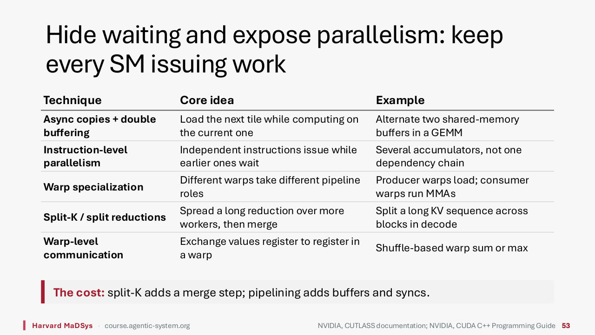
掩盖等待、暴露并行：让每个 SM 持续发射工作
| 技术 | 核心思想 | 示例 |
|---|---|---|
| 异步拷贝 + 双缓冲 | 计算当前 tile 时加载下一个 | GEMM 中交替使用两个共享内存缓冲区 |
| 指令级并行 | 前面的指令在等待时，独立的指令照常发射 | 多个累加器，而不是一条依赖链 |
| warp 特化 | 不同 warp 承担不同的流水线角色 | 生产者 warp 负责加载；消费者 warp 执行 MMA |
| Split-K / 拆分归约 | 把一个长归约分给更多工人，再合并 | 解码时把长 KV 序列拆到多个块上 |
| warp 级通信 | 在 warp 内寄存器到寄存器地交换数值 | 基于 shuffle 的 warp 求和或求最大值 |
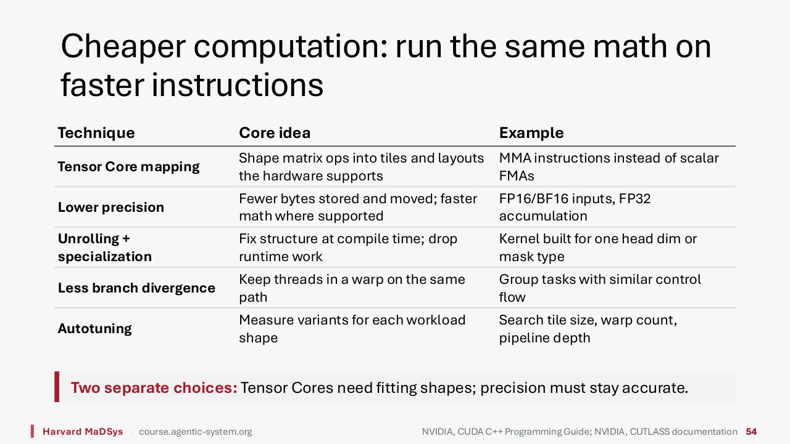
更便宜的计算：同样的数学，用更快的指令
| 技术 | 核心思想 | 示例 |
|---|---|---|
| 映射到 Tensor Core | 把矩阵运算整理成硬件支持的 tile 和布局 | 用 MMA 指令代替标量 FMA |
| 更低精度 | 存储和搬运的字节更少；在支持的地方计算更快 | FP16/BF16 输入，FP32 累加 |
| 循环展开 + 特化 | 在编译期固定结构，去掉运行时工作 | 为某个头维度或掩码类型专门构建的 kernel |
| 减少分支发散 | 让一个 warp 中的线程走同一条路径 | 把控制流相似的任务分在一组 |
| 自动调优 | 针对每种负载形状测量不同变体 | 搜索 tile 大小、warp 数、流水线深度 |